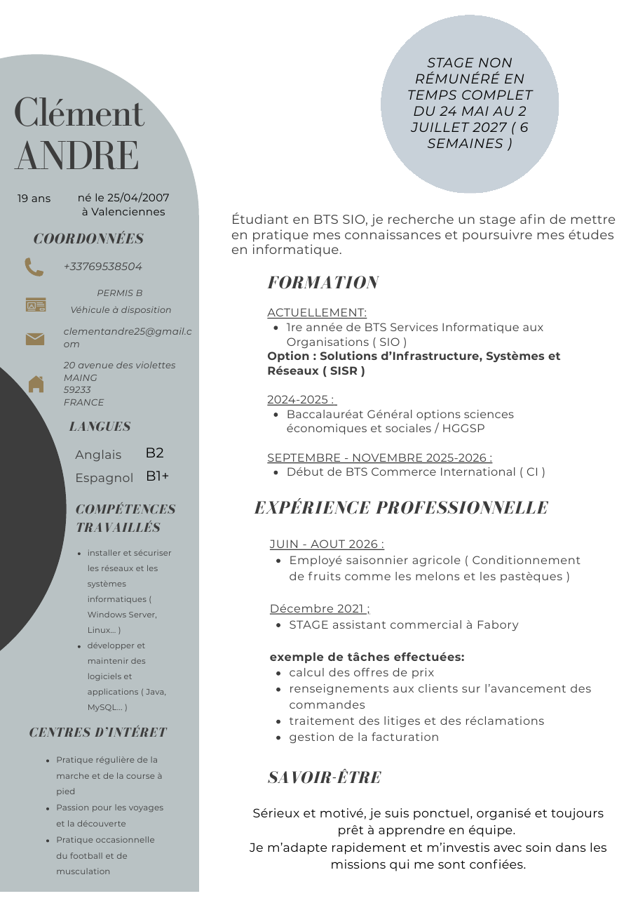

▤
Systèmes
Je découvre l’administration des systèmes, des postes et des serveurs, avec les bases de Windows Server et de Linux.
WINDOWS SERVER · LINUXÉTUDIANT EN BTS SIO · PARCOURS SISR CHOISI
Je suis en première année de BTS SIO et j’ai choisi le parcours SISR. J’apprends les systèmes et les réseaux, avec l’envie de comprendre comment ils fonctionnent et comment les sécuriser.
01 — QUI SUIS-JE ?
« Je ne pensais pas forcément partir dans l’informatique au départ. C’est en la découvrant que j’ai compris que ça me plaisait vraiment. »
Je m’appelle Clément André et je suis étudiant en première année de BTS SIO. Mon premier choix après le bac a été le Commerce International. Pendant cette année, j’ai découvert l’informatique et j’ai eu envie de m’y consacrer. J’ai donc changé de formation pour apprendre ce qui m’intéressait vraiment.
Je suis encore au début de mon parcours. J’avance étape par étape, entre les cours, les exercices et les expériences en entreprise. Pour la suite, j’aimerais travailler dans l’informatique, plutôt sur un poste de bureau. La cybersécurité pourrait m’intéresser plus tard, et je reste ouvert à l’idée de travailler à l’étranger.
02 — CE QUE J’APPRENDS
Je débute dans le domaine : voici les outils et les notions que j’ai déjà rencontrés. Je vais pouvoir ajouter des exemples plus précis avec les projets et les stages.
Je découvre l’administration des systèmes, des postes et des serveurs, avec les bases de Windows Server et de Linux.
WINDOWS SERVER · LINUXJe travaille les bases des réseaux et le rôle des équipements et services qui permettent aux postes de communiquer.
BASES RÉSEAUX · BTS SIOJ’ai commencé à voir Java et MySQL. Ces notions m’aident aussi à mieux comprendre les autres spécialités du BTS.
JAVA · MYSQLMes expériences m’ont appris à être ponctuel, organisé et à m’adapter à une équipe. Je prends le temps de comprendre ce qu’on me demande.
SÉRIEUX · ÉCOUTE · ÉQUIPE03 — MA FORMATION ACTUELLE
EN COURS · PREMIÈRE ANNÉE
Lycée polyvalent Dampierre · Valenciennes
Le BTS SIO prépare aux métiers de l’informatique dans les organisations. On y apprend à installer, maintenir et faire évoluer des services et des solutions informatiques.
En BTS SIO, il existe deux parcours. Le parcours SLAM est tourné vers le développement de logiciels et d’applications. Le parcours SISR porte sur les systèmes, les réseaux et les infrastructures.
Installer, administrer et sécuriser les infrastructures, les systèmes et les réseaux. C’est le parcours qui correspond le mieux à ce que j’ai envie d’apprendre.
Concevoir et maintenir des applications et des solutions logicielles.
J’ai choisi définitivement SISR. En ce début d’année, le choix n’est pas encore officiellement validé par la formation, mais c’est bien mon orientation.
04 — MES EXPÉRIENCES & LA SUITE
Voici quelques expériences et étapes de formation qui font partie de mon parcours.
J’ai participé à la préparation d’offres, au suivi de commandes, au traitement de litiges et à la gestion de factures. Cette expérience m’a donné un premier aperçu du travail en entreprise.
Après le bac, je me suis orienté vers le Commerce International pour commencer mes études supérieures.
C’est pendant cette année que j’ai découvert l’informatique. J’ai compris que je voulais continuer dans cette voie et j’ai décidé de rejoindre le BTS SIO.
J’ai travaillé dans le conditionnement de melons et de pastèques. Une expérience physique où il fallait garder le rythme et travailler avec les autres.
Je commence ma formation en informatique et je construis mes premières bases en systèmes et réseaux.
J’ai trouvé mon stage au service informatique d’IKO-AXTER. Il sera en lien avec le parcours SISR. J’aimerais découvrir le travail quotidien de l’équipe et mettre en pratique ce que j’apprends en cours.
IKO-AXTER conçoit des solutions d’étanchéité pour le bâtiment. En savoir plus sur IKO ↗
ET APRÈS ?
Pour l’instant, j’aimerais travailler dans l’informatique, plutôt dans un poste de bureau. Les systèmes et réseaux m’intéressent, et je verrai avec le temps si je veux évoluer vers la cybersécurité. Travailler à l’étranger reste aussi une possibilité.
05 — MON CV
J’ai ajouté le CV que j’ai utilisé pour chercher mon stage. Tu peux le regarder sur cette page ou télécharger le PDF.

Je pourrai ajouter ici le compte rendu et l’attestation de stage après l’avoir effectué. Le portefeuille de compétences sera ajouté quand j’aurai le document de l’établissement.
06 — VEILLE TECHNOLOGIQUE
MON SUJET · BTS SIO SISR
Ma question : quelles menaces récentes visent les comptes professionnels, et comment les entreprises peuvent-elles mieux protéger leurs accès ?
Je vais suivre des attaques, des failles et des conseils de sécurité qui concernent les comptes et les connexions au travail. Je m’intéresse surtout à ce que les équipes informatiques peuvent faire concrètement. Les passkeys seront évoquées comme une solution parmi d’autres.
LE SUJET
Les employés utilisent leurs comptes pour accéder aux courriels, aux fichiers et aux applications. Si un compte est volé, un attaquant peut lire des informations, envoyer des messages au nom de la personne ou essayer d’atteindre d’autres services de l’entreprise.
Le vol peut venir d’un faux site de connexion, d’un mot de passe déjà divulgué ou d’une demande de validation acceptée par erreur. Une faille dans un serveur de connexion ou un outil de gestion des identités peut aussi mettre des accès en danger. C’est pour cela que ma veille porte à la fois sur les méthodes de connexion et sur la gestion des comptes et de leurs droits.
ACTUALITÉS RÉCENTES
Cisco a signalé une faille dans Identity Services Engine qui pouvait permettre à un attaquant distant d’obtenir un certificat d’identité d’appareil. Cisco a publié des mises à jour correctives et indique ne pas avoir connaissance d’une exploitation malveillante.
À retenir pour le SISR : maintenir à jour les outils qui gèrent les identités des appareils et leurs accès au réseau.
Lire l’avis Cisco ↗Microsoft a décrit EvilTokens, un service qui incite des utilisateurs à entrer un code sur une vraie page de connexion afin d’autoriser l’accès d’un attaquant à leur compte.
À retenir pour le SISR : expliquer aux utilisateurs de ne jamais saisir un code de connexion demandé par un inconnu ou un faux support.
Lire l’analyse Microsoft ↗Microsoft a analysé une campagne de tromperie autour des passkeys. Après avoir compromis un compte, les attaquants essayaient d’ajouter une nouvelle méthode de connexion pour conserver leur accès.
À retenir pour le SISR : surveiller les connexions inhabituelles et les changements ajoutés aux méthodes d’authentification.
Lire l’analyse Microsoft ↗LE RÔLE DU SISR
Pour chaque événement, je regarde quels comptes, appareils ou services sont concernés, comment l’accès a été obtenu et ce que recommande la source. Ça permet de relier l’actualité à des tâches SISR : administrer les comptes, régler les droits, maintenir les outils à jour, examiner les journaux de connexion et aider les utilisateurs.
RÉPONSE À MA QUESTION
Il n’existe pas une seule mesure qui bloque toutes les attaques. L’entreprise doit superposer plusieurs protections et vérifier qu’elle peut réagir si un compte est quand même compromis.
Utiliser des mots de passe longs et différents, et activer le MFA, surtout pour les comptes administrateurs, la messagerie et les accès à distance. Quand c’est possible, choisir une méthode résistante au phishing.
Donner à chacun uniquement les accès nécessaires à son travail. Désactiver rapidement les comptes qui ne servent plus et protéger séparément les comptes d’administration.
Installer les correctifs des systèmes d’identité, VPN et outils de connexion. Examiner les journaux et signaler les connexions inhabituelles ou l’ajout d’une nouvelle méthode d’authentification.
Si un compte paraît compromis, l’équipe doit pouvoir bloquer l’accès, révoquer les sessions, réinitialiser les identifiants concernés et vérifier qu’aucun autre moyen de connexion n’a été ajouté.
En résumé, on réduit le risque en protégeant les connexions, en limitant les droits et en surveillant les comptes. Le rôle SISR est aussi de garder les outils à jour et de savoir quoi faire dès qu’une activité paraît anormale.
MON RYTHME DE VEILLE
Je noterai sa date, sa source, ce qui s’est passé et ce que j’en retiens pour une entreprise et pour le SISR. Pour m’organiser, je garderai les liens dans mes favoris et un petit tableau de suivi.
SOURCES QUE JE CONSULTERAI
CERT-FR · avis et alertes ↗ANSSI · recommandations ↗Microsoft Security Blog ↗Cisco Security Advisories ↗07 — CONTACT
UNE QUESTION SUR MON PARCOURS OU LE STAGE ?
Remplis le formulaire et je recevrai ton message par e-mail. L’objet est facultatif.